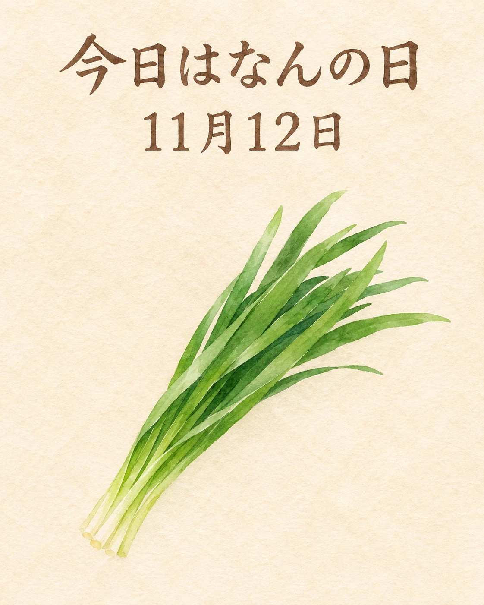

11月12日は「いいにらの日」です🌿
JA高知県が制定した記念日。高知県でにらの生産量が増える11月と、12日を「いい（1）に（2）ら」と読む語呂合わせにちなみ、2020年に日本記念日協会へ登録されました。
にらの魅力は、すっと立つ香りと、鮮やかな緑。おひたしや和え物など、和食でも親しまれている食材です。火の入れ方や味の重ね方で表情が変わる、葉ものの味わいに目を向けてみませんか。
季節の味わいとともに、心ほどけるひとときをお過ごしください✨
香りを生かす、にらの楽しみ
JA高知県の2020年11月6日の発表では、11月に生産量が増えることと日付の語呂合わせを制定の理由として説明しています。毎年の固定日で、2026年は11月12日（木）です。日本記念日協会の当日一覧でも名称を確認しました。2020年の出荷見込みやフェアを、2026年の催事として案内するものではありません。
にらは高知県でハウスと露地による周年生産が行われています。JAの食材紹介には和え物や、だし巻き卵に添えるにらあんかけなどもあり、香りを生かす和食の調理につながります。この記事は食材と記念日の紹介です。当店の当日の産地・入荷・在庫・料理の提供を示すものではありません。
出典：JA高知県「初記念日♪ 11月12日は『いいにらの日』！」（2020年発表）、日本記念日協会・11月12日の認定記念日一覧、JA高知県・農畜産物「にら」（2026年11月12日確認）。